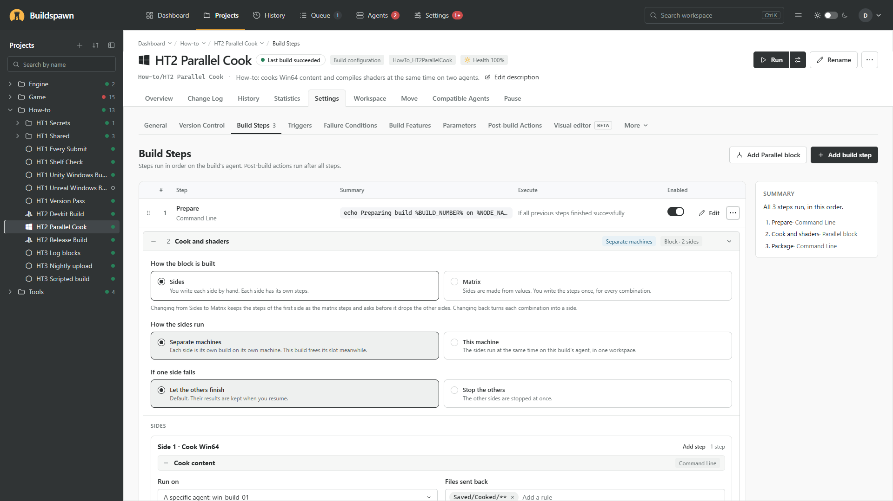
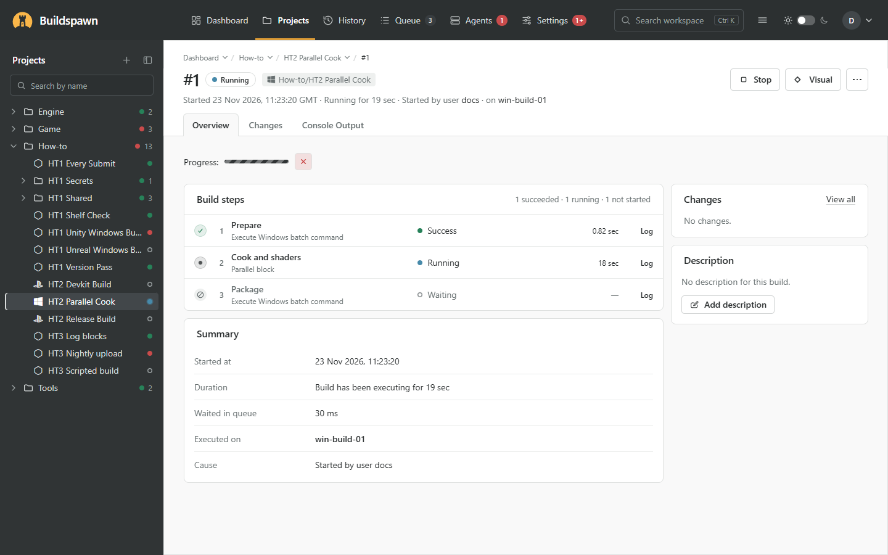
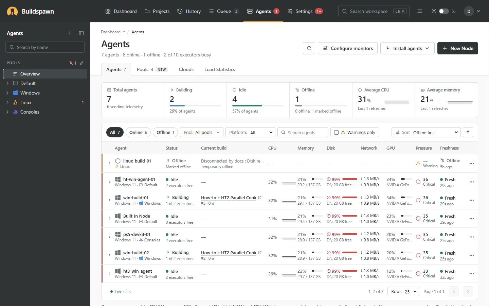
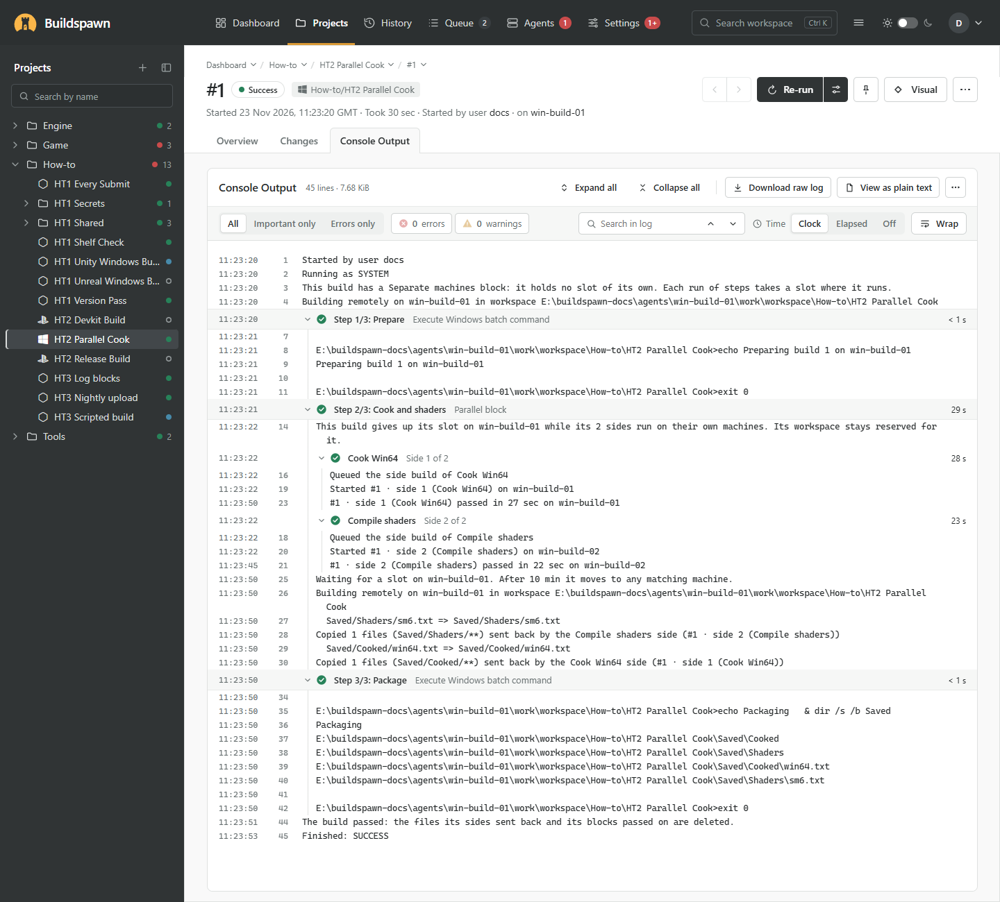

Run steps in parallel on several agents
Cut build time by running independent work, such as a content cook and a shader compile, on two agents at the same time.
Before you start
- You can edit the build configuration (its Settings tab).
- At least two agents can run this build configuration. They must be in a pool that serves its project (see Pools).
- The steps you run side by side don't need each other's output.
Steps
- Open the build configuration, click the Settings tab, then Build Steps.
- Click Add Parallel block. A block named Parallel with two empty sides is added. Drag it to where it should run, for example after a Prepare step.
- Give the block a clear name, for example
Cook and shaders. - Under How the sides run, choose Separate machines. Each side then runs as a side build on its own agent.
- Under If one side fails, keep Let the others finish, or choose Stop the others to save agent time.
- Name the first side, for example
Cook Win64, and click Add step in its header to add its steps. - Set the side's Run on: A specific agent, A pool or label, or Any matching machine. Here it is the agent
win-build-01. - In Files sent back, add a rule for the files that later steps need, for example
Saved/Cooked/**. - Set up the second side the same way, for example
Compile shadersonwin-build-02, sending backSaved/Shaders/**. Click Add side if you need more sides. - Under After the block, leave Fallback after at
10minutes unless your agents are often busy for longer. - Save, then click Run.

Check it worked
- Open the running build. Under Build steps, the block shows Running and the steps after it show Waiting.
- Open Agents. Both agents show Building, with the same build configuration under Current build.
- When the build ends, open Console Output and click Expand all. The block has one section per side, with the agent it ran on and its time, then a line for each set of files copied back.



When the sides are the same steps for many platforms
If every side runs the same steps with a different value, such as platform × config, use a Matrix block instead. You write the steps once, give the values, and every combination runs as its own side with %platform% and %config%. You can exclude combinations, choose where each runs, set how many run at once and pick a combination to try first. The build page then shows a grid of the results with a Re-run for each combination. See Side builds.
Troubleshooting
| Problem | What to do |
|---|---|
| A side waits and never starts. | The agent in Run on is busy, offline, or not in a pool that serves this project. Open the queue to read the reason. Pick a pool instead of one agent, or add the project to the agent's pool. |
| The step after the block can't find a file. | Add a Files sent back rule on the side that makes the file. Only files that match a rule come back. |
| A side fails on its second run only. | Side builds reuse their agent's workspace. Make scripts safe to run twice, for example create a folder only when it is missing. |
| The build goes on on another agent after the block. | The first agent was not free again within Fallback after. Raise the minutes, or tick Never fall back. |
Next steps
- Side builds: how they look in the queue and on the build page.
- Parallel blocks and overrides: every option, including This machine mode and per-step Run on.
- Parallel tests and composite builds.
- Create a pool for console devkits.